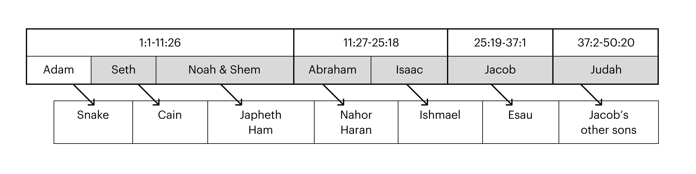

Gênesis 37:2-41:57. Tradução e Design Literário por Tim Mackie para BibleProject Classroom: José (2022).Genesis 37:2-41:57. Translation and Literary Design by Tim Mackie for BibleProject Classroom: Joseph (2022).
Gênesis 42:1-45:25. Tradução e Design Literário por Tim Mackie para BibleProject Classroom: José (2022).Genesis 42:1-45:25. Translation and Literary Design by Tim Mackie for BibleProject Classroom: Joseph (2022).
Gênesis 45:25-50:26. Tradução e Design Literário por Tim Mackie para BibleProject Classroom: José (2022).Genesis 45:25-50:26. Translation and Literary Design by Tim Mackie for BibleProject Classroom: Joseph (2022).
Quando afastamos o zoom para abranger Gênesis 37-50 como um todo, um novo conjunto de relações se apresenta.When we zoom out to take in Genesis 37-50 as a whole, a new set of relationships present themselves.
Gênesis 37:2-50:26. Tradução e Design Literário por Tim Mackie para BibleProject Classroom: José (2022).Genesis 37:2-50:26. Translation and Literary Design by Tim Mackie for BibleProject Classroom: Joseph (2022).
Gênesis 37:2-41:57. Tradução e Design Literário por Tim Mackie para BibleProject Classroom: José (2022).Genesis 37:2-41:57. Translation and Literary Design by Tim Mackie for BibleProject Classroom: Joseph (2022).
Este ato de abertura da história de Yoseph e Yehudah é desenhado de forma simétrica para mostrar como os eventos colocados em movimento pelos irmãos no capítulo 37 são revertidos e completam o ciclo no capítulo 41. O conflito central da trama gira em torno dos sonhos de Yoseph de se tornar governante do mundo e de sua família (Gn 37:2-14), e, na cena final deste ato, esses sonhos começam a se tornar realidade (Gn 41:1-57).This opening act of the Yoseph and Yehudah story is designed in a symmetrical way to show how the events set in motion by the brothers in chapter 37 are reversed and come full circle in chapter 41. The key plot conflict revolves around Yoseph’s dreams of becoming ruler of the world and of his family (Gen. 37:2-14), and by the final scene of this act, those dreams start becoming reality (Gen. 41:1-57).
A sórdida história de Yehudah e Tamar em Gênesis 38 pode a princípio parecer uma digressão do enredo principal da narrativa de Yoseph. Mas esta é apenas uma impressão de superfície. Os temas centrais estão profundamente conectados ao fluxo de Gênesis 37-41 (governo real, engano, mantos, morte do filho, futuro da família), e o foco em Yehudah mesmo não é nada aleatório. Yehudah é a chave para a venda de Yoseph à escravidão no capítulo 37. E, junto com o capítulo 38, essas histórias formam o contraponto ao papel central que Yehudah desempenhará no Ato 2 (Gn 42-45), especificamente sua humildade e amor de autoentrega quando ele oferece sua própria vida no lugar de seu irmão Binyamin (Gn 44:14-34).The sordid story of Yehudah and Tamar in Genesis 38 may at first seem to be a digression from the main plotline of the Yoseph narrative. But this is only a surface-level impression. The core themes are deeply connected to the flow of Genesis 37-41 (royal rule, deception, robes, death of the son, future of the family), and the focus on Yehudah himself is anything but random. Yehudah is key to Yoseph’s sale into slavery in chapter 37. And together with chapter 38, these stories form the counterpoint to the central role Yehudah will play in Act 2 (Gen. 42-45), specifically his humility and self-giving love when he offers his own life in the place of his brother Binyamin (Gen. 44:14-34).
Gênesis 37:2a NASB — "E estas são as gerações de nascimento de Yaaqov." "Gerações de nascimento" = hebraico toledot / תולדות, que é um substantivo formado da raiz "dar à luz", significando "as coisas que procederam de" ou "as coisas que nasceram de".Genesis 37:2a NASB — "And these are the birth-generations of Yaaqov." "Birth-generations" = Hebrew toledot / תולדות, which is a noun built from the root "to birth," meaning "the things that issued from" or "the things that were birthed from"
Com esta frase introdutória, o movimento literário final de Gênesis começa e amarra este bloco particular de narrativas aos temas mais amplos de todo o rolo. Este título "Estas são as gerações de nascimento de…" aparece 12 vezes no rolo de Gênesis, seis em Gênesis 1:1-11:26 e seis vezes em Gênesis 11:27-50:26. Em 10 desses 12 casos, a frase tem a mesma função, pois introduz os novos descendentes de cada geração, um dos quais será escolhido pela bênção e eleição de Deus.With this introductory phrase, the final literary movement of Genesis begins and ties this particular block of narratives into the wider themes of the entire scroll. This heading "These are the birth-generations of …" appears 12 times in the Genesis scroll, six in Genesis 1:1-11:26, and six times in Genesis 11:27-50:26. In 10 of those 12 cases, the phrase has the same function, as it introduces the new descendants of each generation, one of whom will be singled out by God’s blessing and election.
Gênesis 1:1-11:26 (Gerações de Nascimento). Tradução e Design Literário por Tim Mackie para BibleProject Classroom: José (2022).Genesis 1:1-11:26 (Birth Generations). Translation and Literary Design by Tim Mackie for BibleProject Classroom: Joseph (2022).
Gênesis 11:27-50:20. Design Literário por Tim Mackie para BibleProject Classroom: Abraão (2021).Genesis 11:27-50:20. Literary Design by Tim Mackie for BibleProject Classroom: Abraham (2021).

Genealogias em Gênesis. Criado por Tim Mackie para BibleProject Classroom: Abraão (2021).Genealogies in Genesis. Created by Tim Mackie for BibleProject Classroom: Abraham (2021).
Este padrão na verdade destaca um importante design composicional por todo o rolo de Gênesis. A narrativa principal traça a linhagem da descendência prometida a um conjunto de irmãos. Então, após a história de sua separação, a linhagem não escolhida sai de cena com uma genealogia que se estende muito além da perspectiva temporal da narrativa. Depois disso, a narrativa recua e foca na linhagem escolhida, retomando sua história.This pattern actually highlights an important compositional design throughout the entire Genesis scroll. The main narrative traces the lineage of the promised seed to a set of siblings. Then, after the story of their separation, the non-chosen line is ushered off the stage with a genealogy that extends far past the narrative time perspective. After this, the narrative backtracks and focuses on the chosen line, picking up their story.
"Esses cabeçalhos transitórios… dirigem progressivamente o foco do leitor do progenitor à prole e estreitam o foco do leitor de todo o mundo a Israel, através de quem todas as famílias da terra serão abençoadas." — DeRouchie, Jason (2013). "A Bênção-Comissão, a Descendência Prometida, e a Estrutura Toledot de Gênesis". JETS, Volume 56.2. 225."These transitional headings … progressively direct the reader’s focus from the progenitor to progeny and narrow the reader’s focus from all the world to Israel, through whom all the families of the earth will be blessed." — DeRouchie, Jason (2013). "The Blessing-Commission, the Promised Offspring, and the Toledot Structure of Genesis,". JETS, Volume 56.2. 225.
"A história de Gênesis se move de (1) os céus e a terra (1:1-2:3) para (2) humanidade (2:4-4:26) para (3) Noá (5:1-6:8) para (4) Sem (11:10-26) para (5) Terá (11:27-25:11) para (6) Yitzhak (25:19-35:29) e finalmente para (7) Ya'akov (37:2-50:26)… As sete divisões se movem do maior para o menor unitário até os leitores chegarem ao veículo central através do qual Deus realizará a redenção — a nação de Israel representada por seus doze patriarcas. A estrutura toledot garante que a narrativa não vagueie sem rumo, mas foque a atenção na linhagem da promessa comissionada para realizar os propósitos de Deus no mundo." — DeRouchie, Jason (2013)."The Genesis story moves from (1) the skies and the land (1:1-2:3) to (2) humanity (2:4-4:26) to (3) Noah (5:1-6:8) to (4) Shem (11:10-26)) to (5) Terah (11:27-25:11) to (6) Yitzhak (25:19-35:29) and finally to (7) Ya'akov (37:2-50:26) … The seven divisions move from larger to smaller unit until the readers arrive at the central vehicle through which God will accomplish redemption—the nation of Israel represented by its twelve patriarchs. The toledot structure ensures that the narrative does not wander aimlessly but focuses attention on the line of promise commissioned to carry out God’s purposes in the world." — DeRouchie, Jason (2013).
Emadi, Samuel (2018). Yoseph, Covenant, and Typology. Tyndale Bulletin, Volume 69.1. 50.Emadi, Samuel (2018). Yoseph, Covenant, and Typology. Tyndale Bulletin, Volume 69.1. 50.
Este design composicional mostra o foco do narrador em traçar a linhagem da família escolhida. Essa obsessão por uma família particular está enraizada nas narrativas iniciais de Gênesis sobre o chamado da humanidade para governar a criação. Uma vez que esse chamado é forjado, a promessa se estreita na descendência da mulher (Gn 3:15-16) que desfará o que foi perdido no Éden. O design de Gênesis mostra que traçar a linhagem dessa descendência prometida é de importância suprema para o autor. E na história de Yoseph, essa promessa nos leva a dois filhos proeminentes: Yoseph e Yehudah.This compositional design shows the narrator’s focus on tracing the lineage of the chosen family. This obsession with a particular family line is rooted in the early Genesis narratives about humanity’s calling to rule creation. Once that calling is forfeited, the promise narrows in on the seed of the woman (Gen. 3:15-16) who will undo what was lost in Eden. The design of Genesis shows that tracing the line of this promised seed is of ultimate importance to the author. And in the Yoseph story, that promise leads us to two prominent sons: Yoseph and Yehudah.
Como os ciclos de gerações de nascimento de Gênesis informam a maneira como devemos pensar sobre nossas próprias histórias dentro do escopo do plano de Deus?How do the birth-generation cycles of Genesis inform the way we ought to think of our own stories within the scope of God’s plan?
Módulo 2: Os Sonhos de José e Irmãos Hostis — SESSÕES 5-9. Conheça José, o sonhador, e siga os elos literários que traçam sua descida de visões elevadas de honra até as profundezas do desespero em um poço.Module 2: Joseph’s Dreams and Hostile Brothers — SESSIONS 5-9. Meet Joseph the dreamer and follow the literary links that trace his descent from lofty visions of honor to the depths of despair in a pit.